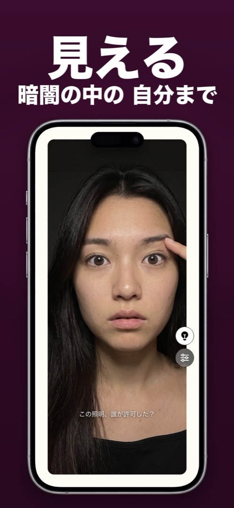
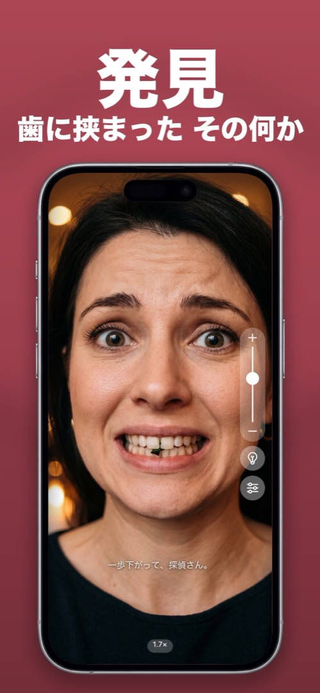

本当に「鏡」として使えるiPhone用の鏡アプリ
リングライト・ズーム・最大輝度を備えた全画面のスマホ鏡。髪、メイク、歯を、誰かに見られる前にチェック。
画面ミラーリングではありません。フロントカメラを使った、本物の鏡です。

家に置き忘れない手鏡
iPhoneで無料トライアル。開いた瞬間に鏡になります。登録もメニューもありません。
ライトとズーム、そして「意見」のある鏡
手鏡にできることは全部。手鏡にできないことも。
誰かに見られる その前に
全画面、常に鏡像、輝度は最大。髪、襟、歯——10秒で完了。

暗闇の中の自分まで見える
電球ボタンをタップすると画面の縁がリングライトに。車の中、暗い洗面所、朝6時のホテルでも。

歯に挟まった何かを発見
ピンチかスライダーでズーム。ほうれん草、ゴマ、眉のはみ出た毛——2倍なら隠れられません。

あなたの鏡が遠慮なく判定
表情を読み取って返事をします。「はいはい、その得意げな笑顔ね。」静かに使いたいときはオフにできます。
開く。見る。閉じる。それだけのアプリです。
Mirrorlyを開く
フロントカメラがすぐに起動し、全画面で鏡のように映ります。輝度は自動で最大に。
暗ければ電球をタップ
画面の縁がリングライトになります。暖色でも寒色でもお好みで。照明が悪いときはMirrorlyが教えてくれます。
細かい部分はズーム
スライダーをドラッグするかピンチして、歯、眉、コンタクトを拡大。操作ボタンは親指に合わせて左右どちらにも。
閉じて出かける
撮影も録画もアップロードも一切なし。ただし、出がけに鏡からひと言あるかもしれません。
「スマホを鏡にする」について、みんなが知りたいこと
まずは正直な答え。それからMirrorlyでのやり方。
iPhoneを鏡にする方法
3つの方法を比較：真っ暗な画面、カメラアプリ、本格的な鏡アプリ。
ガイドを読む → 疑問iPhoneに標準の鏡アプリはある？
ありません——そしてカメラ、FaceTime、拡大鏡が「鏡」と言えない理由。
ガイドを読む → 解説iPhoneのフロントカメラで顔が反転するのはなぜ？
プレビューは鏡像、保存される自撮りは非鏡像。仕組みと、それを変える設定。
ガイドを読む → 機能ガイドライト付き鏡アプリ——暗い車内、薄暗い洗面所、夜遅くのために
フロントカメラにフラッシュライトが効かない理由と、画面がリングライトになる仕組み。
ガイドを読む → 機能ガイド眉、歯、コンタクト、細かい部分のためのズーム付き鏡アプリ
眉、コンタクト、歯——どこまで拡大できるか、どうすれば鮮明に保てるか。
ガイドを読む → ハウツー鏡がないときに、歯に挟まった食べ物を確認する方法
舌でなぞる、水でゆすぐ、あるいはスマホで10秒の確実な方法。
ガイドを読む → ハウツー会議前の身だしなみチェック（10秒以内）
10秒チェックリスト——髪、顔、歯、メガネ、襟、肩——デスクや駐車場から。
ガイドを読む → メイク向けどこでもお直しできるメイク鏡アプリ
正面からの光、調整できる色、拡大、ハンズフリー——メイクミラーに必要なものと、スマホでそれを手に入れる方法。
ガイドを読む → こんなとき手鏡を忘れた？ポケットの中のものを使おう
即席の鏡を「苦し紛れ」から「使える」までランク付け——そしてすでに持っているもの。
ガイドを読む → プライバシー鏡アプリは安全？インストール前に確認すべきこと
カメラを使うアプリ全般で確認すべき権限と危険信号——そしてMirrorlyがあなたのカメラで実際にしていること。
ガイドを読む → 個性あなたを（愛をこめて）判定する、面白い鏡アプリ
「落ち着いて、検査官。」意見のある鏡——そして顔の分析がスマホの中に留まる理由。
ガイドを読む →鏡アプリを入れる前に、みんなが気になること
Mirrorlyは無料ですか？
ダウンロードとお試しは無料です。最初の3回のミラーチェックは無料で、その後は一回限りの購入で永続的に使えます。サブスクはなく、どちらの場合も広告はありません。
詳しく見る →iPhoneに標準の鏡アプリはありますか？
ありません。iOSには鏡アプリが入っていません。多くの人はカメラアプリで代用しますが、カメラは撮影用に作られています。シャッターが親指の下にあり、輝度は最大にならず、前面にライトもありません。Mirrorlyはフロントカメラを本物の鏡に変えます。
詳しく見る →Mirrorlyは写真を保存したりアップロードしたりしますか？
しません。Mirrorlyにはシャッターがなく、写真、動画、カメラのフレーム、顔のデータを取得・保存・送信することは一切ありません。カメラ映像と端末内の表情分析はiPhoneの中に留まります。アカウントもありません。
詳しく見る →暗い場所でも使えますか？
使えます。電球ボタンをタップすると、画面の縁が最大輝度のリングライトになります。夜の車内、暗い洗面所、ホテルの部屋などで便利です。色温度も調整でき、照明が悪いとMirrorlyがライトを提案します。
詳しく見る →歯や眉をズームして確認できますか？
できます。ズームスライダーをドラッグするか画面をピンチして拡大します。2倍程度で、歯の間の食べ物を見つけたり、コンタクトを入れたり、はみ出た毛を抜いたりするのに十分です。
詳しく見る →画面ミラーリングと同じものですか？
違います。画面ミラーリング（AirPlay）はiPhoneの画面をテレビに映す機能です。Mirrorlyは鏡そのもの——フロントカメラであなたの顔を、ガラスの鏡のように映します。
詳しく見る →Mirrorlyで見る顔と自撮りの顔が違うのはなぜ？
Mirrorlyは常に本物の鏡と同じ鏡像で映します。つまり、あなたが見慣れた顔です。自撮りは反転せず、他の人から見た向きで保存されるため、写真が少し「違う」と感じるのです。
詳しく見る →鏡が話しかけてくるのはなぜ？
Mirrorlyの個性です。端末内の表情分析があなたの顔を読み取り、「はい出た、ディーバのポーズ。」や「毛穴探偵さん、近すぎ。」のような一言を返します。「鏡のリアクション」は設定でオフにできます。顔の情報が端末から出ることはありません。
詳しく見る →Androidでも使えますか？
いいえ。MirrorlyはiPhone向けのiOSアプリで、App Storeにて日本語、英語、ドイツ語、フランス語、スペイン語、イタリア語、簡体字中国語で提供しています。
詳しく見る →